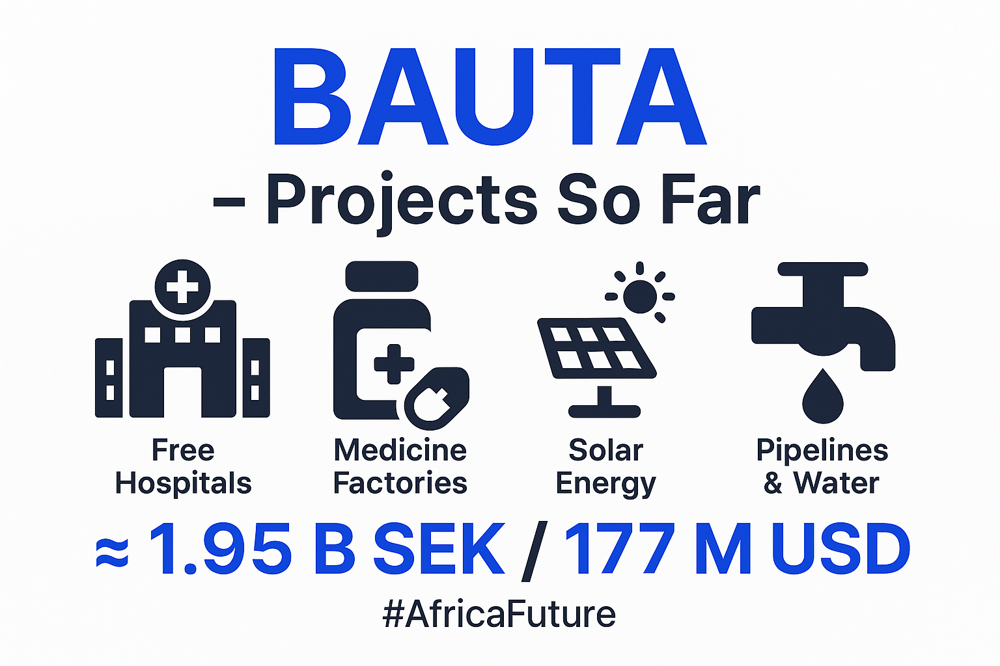

Konsultkostnader
üíº Privatpersoner: 80 USD/timme
üè¢ F√∂retag: 150 USD/timme
Alla intäkter går till utvecklingen av framtidsprojekt och humanitärt stöd genom Vision Framtid och BAUTA-projekten.
BAUTA Water Wells Drilling

Dygnsdrift för fria vattenkällor i Afrika.
“Drill baby drill!”
BAUTA 1000 Drilling Rigs

1000 borriggar – målet: en brunn i varje by, hela Afrika på 5 år.
BAUTA Vision
Framtidens fria sjukvård & medicin och infrastruktur.
Free of charge – for Africa.